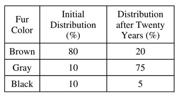

In an experiment, 100 mice were released
into a field to which no other mice had access.
Immediately after their release, a representative
sample of mice was captured, their fur color was
recorded, and they were returned to the field.
After twenty years, a representative sample of
mice was captured and the distribution of fur
color was again recorded.

Which of the following could best explain the
change in fur color distribution, as shown in the
table above?
Approach
Gray fur was likely to have provided some advantage to the mice. Coat color helps with temperature regulation and camouflage.
Alleles could mutate, but only at a low frequency. It is not enough to explain the drastic change over twenty years.
If sexual selection led to an increase of mating between black and brown, we would expect these two fur colors to increase or remain relatively stable. There is no evidence that there would be incomplete dominance in fur color. Even if there were, the color should be in between brown and black, not a light color like gray.
If gray mice were hard to catch twenty years ago, the same case should occur in the future. Therefore, the underrepresentation would be true in both time periods. This is also not the best explanation, since scientists could probably lure mice pretty easily.